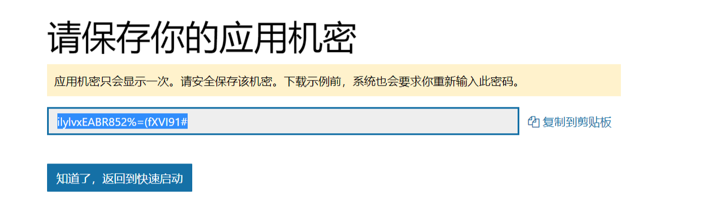
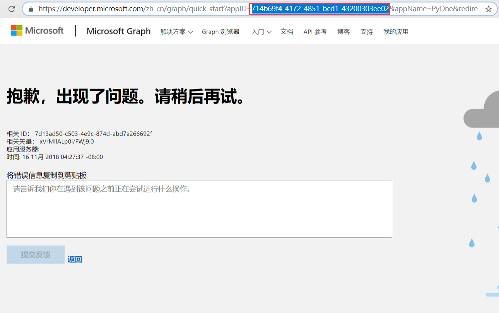
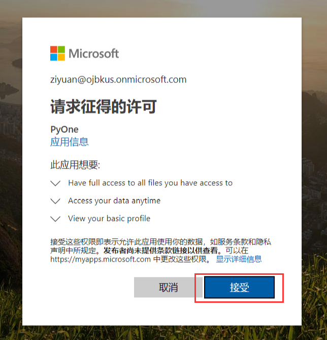

绑定网盘
上一篇已经介绍了怎么运行网站，本篇将介绍如何绑定网盘。
注意！！首次访问，会显示登录后台，输入初始密码：PyOne，登陆后后会自动跳转到绑定网盘页面。如果没有跳转到绑定网盘页面，可以按照：后台-文件管理-添加网盘进行下一步。
绑定网盘
第一步：获取应用机密（client_secret)和应用ID（client_id)
然后点击上方按钮获取应用机密（client_secret)，填写到应用机密(client_secret)栏
在刚才获取应用机密（client_secret)的页面，点击
知道了，返回到快速启动，会出现错误，查看网址栏，找到appID这一个参数，这个参数就是应用ID（client_id)(目前修复了，可直接获取），将appID复制到上方应用ID(client_id)栏填写完上方两个参数，继续下一步



第二步：获取验证码并结束绑定
步骤1：点击绑定账号，并跳转到绑定页面
步骤2：选择需要绑定的账号，进入下一步
步骤3：接收认证许可，获取一个code，将这个code填写到code栏后，点击结束绑定



绑定成功
如果没有出现错误，则会进入以下页面。

安装预览